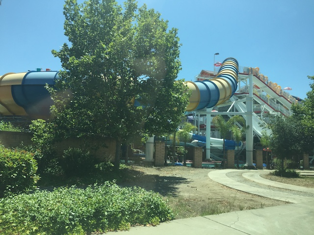

| |
Stormrider Photos

We're here at SunSplash, where we'll be reveiwing Stormrider. But while that's its name, I generally just call this ride Mega Bowl. The biggest of the bowl slides, and yeah. They have three of them here. So this should be the best of them. Right? WRONG!!! So basically, you grab your tube, head up the stairs. Considering how this slide always has a long wait, you're gonna be waiting for a while. And since it's the biggest, you really have a lot to climb. You grab your tube, plop it in the water, then when its clear, the worker pushes you down into the drop. The drop is fun. but it's not that much. It's mostly just to speed you up. There's no weird stomach feeling or anything. Once you make it to the bowl, you take a couple rides around the bowl. Then you go down a little bonus drop and hit a water curtain. And if you're really unlucky, you may just have to push yourself out of the bowl. And then PLOP!!! Into the lazy river you go. I know it seems like since it's much bigger, you would go faster. And yeah. The drop is faster and more fun. But because the bowl is bigger, you go around about the same amount simply due to having more bowl to cover, and that big bowl really loses you speed. You're far more likely to get suck here. But while it's not nearly as good as it looks, it's still really fun. Yeah, this park has freaking Vortex, a true body bowl with a real helix of death. So it's not necesarry, but it's still a very fun slide.
7/10
Location: Golfland Sunsplash (Roseville)
Opened: 2004
Built by: ProSlide
Last Ridden: July 27, 2024
Stormrider Photos
Home
|